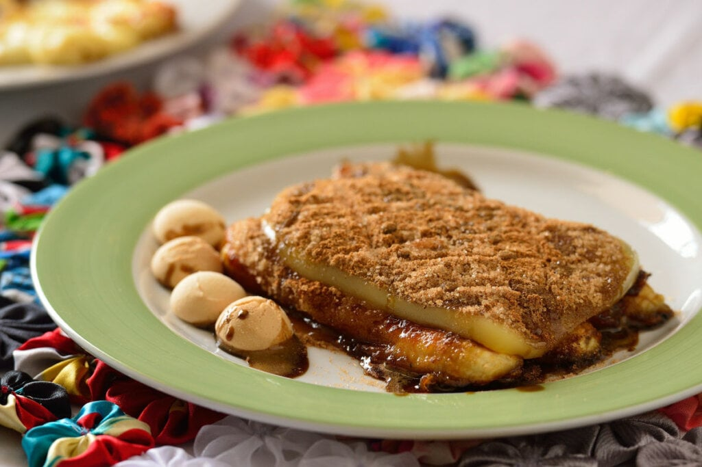
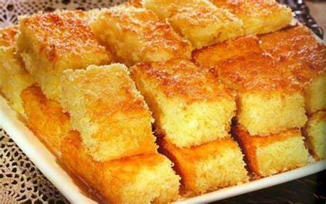

Cartola
Ingredientes
2 bananas
70 g de queijo manteiga
1 colher de sopa de manteiga
1 colher de sopa de açúcar
Canela em pó a gosto
Modo de preparo
Descasque e corte as bananas ao meio no sentido do comprimento. Em uma frigideira, aqueça a manteiga em fogo alto e frite as bananas por 1 minuto. Depois, vire-as para dourar do outro lado. Reserve. Na mesma frigideira, doure o queijo dos dois lados e reserve. Em um recipiente, misture o açúcar e a canela. Acomode as bananas lado a lado em um prato, coloque o queijo por cima e salpique a mistura de açúcar e canela. Sirva em seguida.
Bolo de macaxeira
Ingredientes
3 xícaras de chá de mandioca descascada
2 xícaras de chá de açúcar
3 colheres de sopa de manteiga
3 gemas de ovo
3 claras de ovo
2 colheres de chá de sal
1/2 xícara de chá de leite
1 colher de sopa de fermento químico em pó
Óleo para untar
Farinha de trigo para enfarinhar
Modo de preparo
Rale a mandioca, coloque em um pano de prato e esprema para tirar o leite. Em um recipiente, coloque a mandioca ralada, o açúcar, a manteiga, as gemas, o sal e o leite e misture. Na batedeira, bata as claras até atingir o ponto de neve. Em seguida, adicione à massa e misture delicadamente. Acrescente o fermento e misture. Coloque a massa em uma forma untada com óleo e enfarinhada com farinha de trigo. Leve ao forno preaquecido a 200°C até dourar. Sirva em seguida.